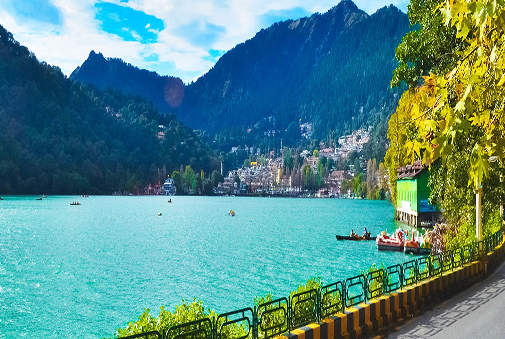

1. Nainital, Uttarakhand
Nainital is also known as a king of hill stations in India it is the state of Uttarakhand. Nanital is the judicial capital of Uttarakhand,
the high court is located here. The headquarters of the Kumaon division as well as the district. In Nainital, there is the house of the
governor in Uttrakhand. Nainital is the summer capital of the united provinces. It is also part of the Beautiful Hill Stations in India.
Nanital is famous for the Nani lake, there are awesome views and pleasant weather. It is the best place for a tourist. some other place
of the tourist insert in the mall, known as the Govind Vallabh pant marg. There are offices and malls are located in the mall.
2. Ladakh, Jammu & Kashmir
Ladakh, situated in Jammu and Kashmir, is one of the perfect summer vacation places in India. Hailed as one of the most arduous,
treacherous, and coolest road trips in the world, the Manali-Leh road is nothing but a challenge. One should take up the daring
task of travelling the Srinagar-Leh road as well. With chilly nights that will make your teeth chatter to warm mornings of visiting
frozen lakes and ancient monasteries, you will come back more patient and peaceful than ever.

3. Cherrapunji, Meghalaya
The wettest place on earth, Cherrapunji is incidentally also one of the most unique places for a summer vacation in India. Cherrapunji,
also known as Sohra or Churra, means ‘the land of oranges’. This stunning piece of land, situated in Meghalaya, is mostly covered by thick
clouds and mists and receives a ton of rain. If you’re someone who loves monsoon, then this is a must-visit place for you. You can see
streams, cold water springs, and many gorgeous waterfalls in this lovely hill town. The cliffs of Cherrapunji also offer stunning views
of the plains of Bangladesh.

4. Darjeeling, West Bengal
Darjeeling’s most well-liked attractions embody historic places of the hilly station like toy trains, monasteries, botanic gardens,
a zoo, and also the Darjeeling-Rangeet depression traveler tramway (the longest transport in Asia).Darjeeling could be an excellent spot
to run around and explore the tea estates, villages, and markets. do not visit throughoutthe monsoon season tho’ — the region is one of
all the wettest places in India is the best place of the hill station. The popular hill
station is a similar zoo, tiger hill, rock garden, etc. It is the best place to enjoy it. There are so much snowfall and a beautiful hill
and mountain in India.